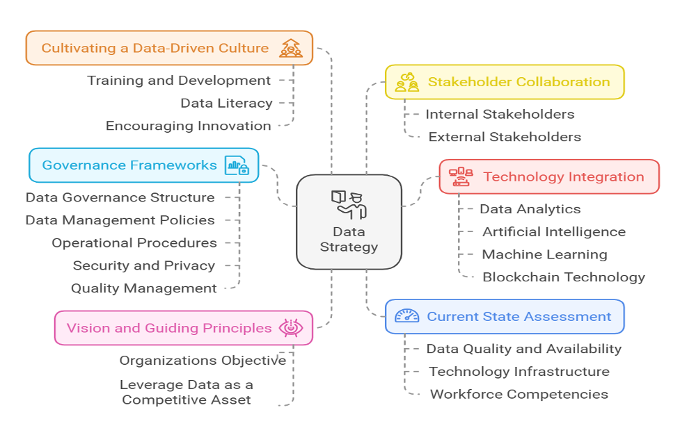

(This article was originally published in the annual publication of Nepal Customs, "Bhansar Smarika," on the occasion of International Customs Day 2025)
Mohan Kumar Pudasiani
Data Analyst, Department of Customs
WCO Pre-accredited risk management expert
In an interconnected and competitive global trade environment, the role of Customs authorities has become increasingly vital. At the forefront of modern operations is the concept of a data strategy: a comprehensive plan that governs how organizations collect, manage, analyze, and utilize data to achieve strategic objectives. Such a strategy not only enhances decision-making but also optimizes operational efficiency, enabling organizations to navigate complexities effectively.
Customs agencies are entrusted with safeguarding economic interests, ensuring regulatory compliance, facilitating legitimate trade, and enhancing national security. To meet these diverse and critical responsibilities, they must adopt a robust data strategy that aligns with organizational goals and adapts to the fast-evolving global trade landscape. This approach empowers Customs to make data-driven decisions, streamline operations, and address challenges with agility and precision.
According to the Harvard Business Review, a data strategy is defined as a coherent plan to organize, govern, analyze, and deploy information effectively. This concept emphasizes the importance of a structured framework for managing data assets, enabling organizations to derive actionable insights while ensuring alignment with broader objectives. For Customs authorities, implementing such a strategy offers the following benefits:
Without a clear and well-defined data strategy, Customs operations face the risk of inefficiencies, increased costs, and reduced effectiveness. Such limitations can hinder the ability to fulfill regulatory, operational, and economic mandates, underscoring the need for a structured and forward-looking approach to data management.

At the core of any effective data strategy lies a clear vision that articulates how data will be managed and leveraged to achieve organizational goals. For Customs authorities, this vision must be rooted in their mission to facilitate trade, ensure compliance, and safeguard national interests. Key guiding principles such as data transparency, security, and accountability should govern decision-making and operational behavior. These principles ensure that the data strategy remains aligned with broader institutional objectives while maintaining flexibility to adapt to new challenges.
Effective governance is a cornerstone of any successful data strategy. A robust governance framework ensures the quality, security, and accessibility of data while promoting accountability among stakeholders. Governance includes measures to:
Strong governance not only minimizes risks associated with data breaches and inaccuracies but also fosters trust among stakeholders.
The development and implementation of a data strategy require collaboration across multiple levels of the organization and with external stakeholders. This includes:
By fostering an inclusive approach, Customs authorities can ensure that the data strategy addresses diverse perspectives and operational needs.
A critical first step in developing a data strategy is assessing the organization’s current capabilities. This involves identifying existing strengths, addressing bottlenecks, and exploring opportunities for innovation. Thorough evaluation includes:
Conducting an analytics maturity assessment, using tools like the Analytics Maturity Model (AMM), provides valuable insights into the organization’s readiness to adopt advanced data practices.
The integration of advanced technologies is essential for realizing the full potential of a data strategy. This includes:
These technologies not only improve data processing capabilities but also enable Customs to stay ahead in a rapidly changing trade environment.
For a data strategy to succeed, it must be embedded within the organizational culture. Customs authorities should prioritize:
The Assessment Phase lays the groundwork for the data strategy by identifying gaps and opportunities. This involves:
The findings from this phase provide a clear picture of the organization’s starting point and inform subsequent planning efforts.
Building on the insights from the assessment, the Design Phase involves creating a detailed strategy that aligns with organizational goals. Key activities include:
The roadmap is operationalized through phased goals to ensure manageable progress and sustained momentum. This includes:
Key performance indicators (KPIs) are identified to monitor progress and guide adjustments as needed.
The development and implementation of a data strategy require significant financial and human resources. Customs authorities should:
Resistance to change can hinder strategy implementation. To address this:
Inaccurate or incomplete data can undermine decision-making processes. Customs authorities must implement:
While a data strategy should be forward-looking, it must remain realistic. Breaking the implementation into phases ensures achievable goals and sustained progress.
A well-executed data strategy offers numerous benefits, including:
In a data-driven world, Customs authorities must prioritize the development and implementation of a robust data strategy. By aligning data practices with organizational goals, leveraging advanced technologies, and fostering stakeholder collaboration, Customs can enhance their ability to facilitate trade, ensure compliance, and safeguard national interests. A strategic approach to data management not only strengthens resilience and agility but also cements the organization’s leadership role in the global trade ecosystem.
DalleMule, L., & Davenport, T. H. (2017). What’s your data strategy? The key is to balance offense and defense. Harvard Business Review, https://hbr.org/2017/05/whats-your-data-strategy
United Nations. (2020). Data strategy of the Secretary-General for action by everyone, everywhere with insight, impact and integrity 2020–22. Retrieved from https://www.un.org/en/content/datastrategy/images/pdf/UN_SG_Data-Strategy.pdf
World Customs Organization. (n.d.). WCO capacity building framework on data analytics. Brussels: World Customs Organization.
World Customs Organization. (n.d.). WCO data strategy. Brussels: World Customs Organization.
World Customs Organization. (2018). Data analysis practitioner’s handbook. Brussels: World Customs Organization.
World Customs Organization & World Trade Organization. (2022). Study report on disruptive technologies. Brussels: World Customs Organization.